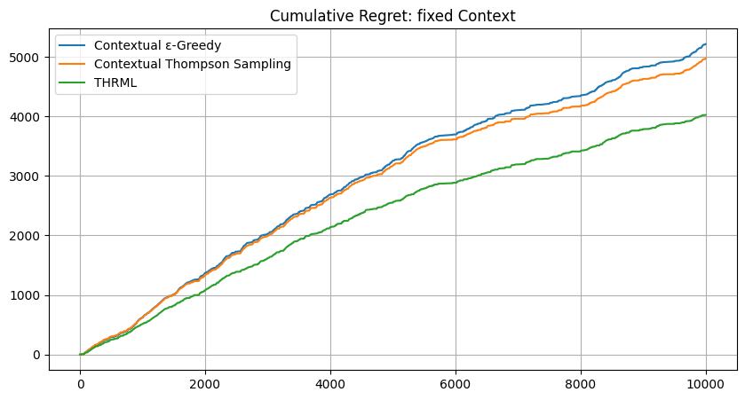
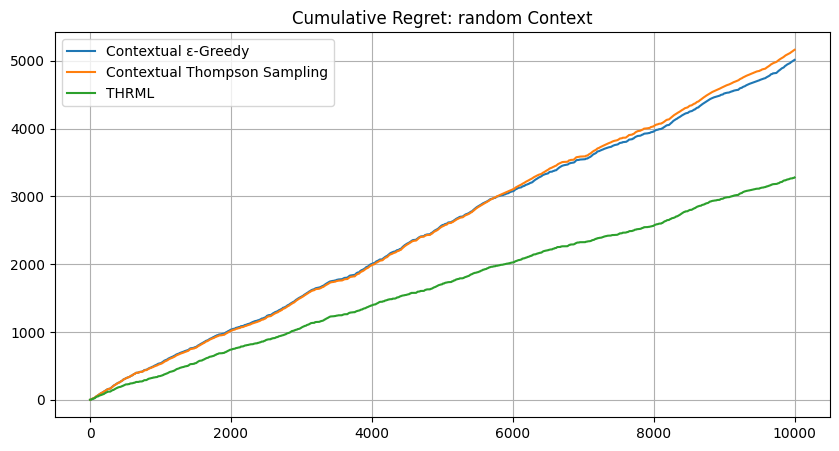

1 Overview
In multi-venue financial markets, traders must decide where to route orders without full visibility into execution quality across all venues. Traditional multi-armed bandit approaches treat venues as independent, missing valuable cross-venue correlation signals. This article proposes a novel approach using THRML (Thermodynamic Hypergraphical Model Library), a JAX-based library for probabilistic graphical models, to model venue correlations as an Ising energy-based model. By leveraging conditional (clamped) sampling, the THRML agent observes partial market state (a set of context venue outcomes) and infers the best routing decision based on learned correlations. The results demonstrate that THRML achieves significant cumulative regret reduction compared to contextual Thompson Sampling and \(\epsilon\)-greedy baselines on both synthetic and real cryptocurrency market data, validating the power of conditional inference for smart order routing.
2 Introduction
Financial order routing presents a fundamental decision problem: given multiple trading venues (exchanges, dark pools), where should a trader send their order to achieve the best execution? This decision must often be made with incomplete information. After all, the trader cannot simultaneously observe the execution quality at all venues before committing to one.
2.1 The Multi-Venue Challenge and Opportunity
Modern financial markets are fragmented across numerous trading venues. In cryptocurrency markets alone, traders must choose between dozens of exchanges, each with different liquidity profiles, fee structures, and momentary execution quality. The optimal venue changes over time, creating a learning problem that traditional approaches model as a multi-armed bandit. However, standard bandit algorithms treat each venue as independent. In reality, venues are often correlated: a favorable price movement on one exchange tends to predict similar movements on others due to arbitrage activity and shared market microstructure.
Consider a scenario where, before making a routing decision, the trader can observe the most recent trade outcomes at a subset of venues (the “context venues”). Given a model that captures cross-venue correlations, this context can be used to make better predictions about unobserved venues. This is precisely where conditional inference becomes powerful. Traditional contextual bandits fail to fully exploit this structure because they treat each context as a separate learning problem, do not model the generative process that creates correlations, and cannot perform principled belief propagation across venues.
2.2 The Proposed Approach: THRML and Energy-Based Models
This work proposes modeling the multi-venue system as an Ising Energy-Based Model (EBM), where:
- Each venue is represented as a node (spin) in a graph
- Edges capture pairwise correlations between venues
- Node biases represent each venue’s individual tendency toward favorable/unfavorable outcomes
Using THRML (Thermodynamic Hypergraphical Model Library), developed by Extropic AI for efficient probabilistic graphical model sampling, a THRML agent is implemented that:
- Learns the Ising model parameters (biases, couplings) from partial observations
- Conditions on the observed venues by clamping their states
- Samples from the conditional distribution to estimate success probabilities
- Selects the venue with highest predicted success probability
This approach directly leverages THRML’s core capability: efficient block Gibbs sampling with support for clamped (fixed) nodes, enabling conditional inference in a principled, GPU-accelerated manner12.
2.3 Contributions
The main contributions of this work are:
Novel problem framing: The routing problem is formalized as a conditional inference problem based on partial market observations.
THRML-based agent design: An agent is implemented that uses Ising EBM structure with clamped sampling to perform conditional inference over venue states, optimized for JAX accelerators.
Empirical validation: Evaluation results demonstrate on both synthetic (N=3) and real cryptocurrency market data (N=3) that THRML achieves lower regret compared to state-of-the-art contextual bandit baselines.
Hardware relevance: The proposed approach is designed to be compatible with future Extropic thermodynamic hardware, which promises up to 10,000× energy efficiency improvements 3 for probabilistic sampling workloads.
3 Background: THRML and Energy-Based Models
Energy-Based Models (EBMs) represent probability distributions through an energy function \(E(\mathbf{x})\), where the probability of a state follows the Boltzmann distribution:
\[P(\mathbf{x}) = \frac{1}{Z} e^{-E(\mathbf{x})}\]
where \(Z = \sum_{\mathbf{x}'} e^{-E(\mathbf{x}')}\) is the partition function, a normalization constant that ensures all probabilities sum to one. Low-energy states are more probable, and the shape of the distribution is controlled by the energy landscape.
3.1 The Ising Model
The Ising model is a classical EBM defined by the Hamiltonian (energy function) \(H(\mathbf{x})\):
\[H(\mathbf{x}) = - \left( \sum_i h_i x_i + \sum_{(i,j) \in \mathcal{E}} J_{ij} x_i x_j \right)\]
The probability of a configuration \(\mathbf{x}\) determines the system’s thermodynamics via the Gibbs measure:
\[P(\mathbf{x}) = \frac{1}{Z_\beta} e^{-\beta H(\mathbf{x})}\]
where \(\mathbf{x} \in \{-1, +1\}^N\) are spin variables, \(h_i\) are biases, \(J_{ij}\) are coupling weights, and \(\beta\) is the inverse temperature (controlling the “sharpness” of the distribution). Positive couplings (\(J_{ij} > 0\)) lower the energy when spins align, making correlated states more probable.
3.2 THRML: GPU-Accelerated Probabilistic Sampling
THRML (Thermodynamic Hypergraphical Model Library) is a JAX-based Python library developed by Extropic AI for sampling probabilistic graphical models:
“THRML is a JAX library for building and sampling probabilistic graphical models, with a focus on efficient block Gibbs sampling and energy-based models. Extropic is developing hardware to make sampling from certain classes of discrete PGMs massively more energy efficient; THRML provides GPU-accelerated tools for block sampling on sparse, heterogeneous graphs.”
— THRML Documentation
THRML uses block Gibbs sampling, which iteratively updates non-interacting nodes in parallel according to their conditional distributions. For the Ising model:
\[P(x_i = +1 | x_{\text{nb}(i)}) = \sigma\left(2\beta \left( h_i + \sum_{j \in \text{nb}(i)} J_{ij} x_j \right)\right)\]
The critical capability for this application is THRML’s support for clamped blocks: nodes fixed to observed values during sampling. This enables conditional inference:
\[P(X_{\text{free}} | X_{\text{clamped}} = x_{\text{obs}})\]
4 Problem Formulation: Conditional Routing
This section formally defines the conditional routing problem and contrasts it with standard bandit settings.
4.1 Problem Setting
Consider a market with \(n\) trading venues. At each time step \(t\):
Environment: The market generates a joint outcome vector \(\mathbf{o}_t \in \{-1, +1\}^n\). We specifically model a competitive execution setting where exactly one venue provides a favorable outcome (\(+1\)) per time step, and all others are unfavorable (\(-1\)).
Context observation: The agent observes a set of “context venues” \(\mathcal{C}_t \subset \{1, \ldots, n\}\) and their outcomes \(\mathbf{o}_{t,\mathcal{C}_t}\) by reading the venue’s public market data feed (e.g., order book updates). This is the partial information available before routing.
Routing decision: Based on the context, the agent selects a venue \(a_t \in \{1, \ldots, n\} \setminus \mathcal{C}_t\) to route its order4.
Feedback: The agent observes the outcome \(o_{t,a_t}\) of its selected venue.
Regret: The agent’s performance is measured by realized counterfactual regret, defined as the difference between the outcome the agent would have received had it acted optimally (according to the oracle) and the outcome it actually observed: \[r_t = o_{t,a^*_t} - o_{t,a_t}\] where \(a^*_t = \arg\max_{a \notin \mathcal{C}_t} o_{t,a}\) is the choice of an omniscient oracle that observes the actual realized rewards for the available venues (providing a strict upper bound on performance).
The goal is to minimize cumulative realized regret \(R_T = \sum_{t=1}^{T} r_t\) over \(T\) time steps.
4.2 Context Modes
Two context observation protocols are considered:
Fixed context: The context venues are always the same (e.g., venues 0 through \(K-1\)). This represents scenarios where a trader has fixed real-time data feeds.
Random context: The context venues are selected uniformly at random each step. This represents scenarios where partial market data arrives from different sources unpredictably.
5 Methodology: Agent Design
5.1 Baseline Agents: Contextual Bandits
Two baseline agents are implemented for comparison. Since the environment consists of discrete context states and binary success/failure rewards, we employ tabular bandit approaches:
- Contextual ε-Greedy: Maintains context-specific success/count statistics with ε=0.1 exploration and a discount factor for adaptation.
- Contextual Thompson Sampling (CTS): Uses Beta-distributed posteriors for each context-venue pair, sampling from \(Beta(\alpha, \beta)\) to make routing decisions, and applies a discount factor for adaptation.
5.2 THRML Agent: Conditional Ising Inference
The THRML agent models the venue system as an Ising EBM and uses clamped sampling for conditional inference.
Selection via clamping: Given context venues \(\mathcal{C}\) with outcomes \(\mathbf{o}_{\mathcal{C}}\), the agent constructs an IsingEBM, clamps the context nodes to their observed states, and uses THRML’s sample_states to draw samples from \(P(X_{\text{free}} | X_{\mathcal{C}} = \mathbf{o}_{\mathcal{C}})\). The update rule also incorporates a mean-field signal propagation mechanism (propagation_damping=0.3) that accelerates belief diffusion across the graph. The full bias update at each step is: \(\mathbf{b}_{new} \leftarrow \gamma \, \mathbf{b}_{old} + \eta \beta (\mathbf{x}_{obs} - \hat{\mathbf{x}}_{obs}) + \delta \cdot \eta \beta (J \cdot \mathbf{x}_{obs})(1 - m_{obs})\), where \(\gamma\) is the discount factor, \(\eta\) is the learning rate, \(\mathbf{x}_{obs}\) and \(\hat{\mathbf{x}}_{obs}\) are the data and model node moments at observed positions (the contrastive divergence term), and \(\delta\) is the propagation damping coefficient that propagates information from clamped nodes to free nodes via the coupling matrix \(J\).
Implementation optimization: To maintain high throughput, the implementation utilizes “Static Infrastructure Pre-building” (build_thrml_infra). For general cases (like the synthetic experiments), the agent uses dynamic node permutation to map context nodes to the model’s first \(K\) indices. In the specific case of real-world experiments (N=3), the implementation leverages an optimized branching strategy (using lax.switch) to select among pre-computed graph topologies and schedules. While the current implementation re-binds the program wrapper per-step to pass updated model parameters into the sampling loop, it avoids the overhead of re-generating the underlying graph connectivity and block schedules.
6 Experiments
6.1 Synthetic Data Experiments
Synthetic environments evaluated the approach across 3 venues with a 1-venue context window.
The synthetic experiments serve as a theoretical validation to confirm that the THRML agent can accurately recover the underlying parameters of a known Ising system, a necessary prerequisite for its application to real-world data.
Experimental Setup:
- 3 venues, 10,000 time steps per run
- 200 independent seeds for statistical significance
- Adaptation rate \(\alpha = 0.05\) (
learning_rate), discount factor 0.995, and coupling decay 0.995. - THRML precision:
n_warmup=50,n_samples=100,steps_per_sample=4.
Results – Fixed Context Mode (K=1):
| Scenario | Ctx-ε-Greedy | Ctx-Thompson | THRML-Cond | THRML Benefit |
|---|---|---|---|---|
| IID Venues | 0.00 | 0.00 | 0.00 | Tie (Optimal) |
| Correlated | 206.40 | 5.99 | 2.21 | Win |
| Regime Shift | 2520.47 | 3555.48 | 2154.07 | Win (-39%) |
Table 1: Mean cumulative regret in Fixed Context mode (N=3, K=1) after 10,000 steps. Zero regret in IID/Fixed signals that the optimal venue was always the context venue, resulting in a competitively forced zero-regret outcome for all agents.

Results – Random Context Mode (K=1):
| Scenario | Ctx-ε-Greedy | Ctx-Thompson | THRML-Cond | THRML Benefit |
|---|---|---|---|---|
| IID Venues | 664.12 | 12.84 | 0.96 | Win |
| Correlated | 1897.93 | 1416.11 | 1418.24 | Competitive |
| Regime Shift | 2052.62 | 2596.88 | 1444.48 | Win (-44%) |
Table 2: Mean cumulative regret in Random Context mode (N=3, K=1) after 10,000 steps.

Summary of Synthetic Findings:
Validation of Competitive Logic (IID Results): In the “IID / Fixed” scenario, all agents achieve exactly 0.0 cumulative regret. This validates the “Competitive Labeling” design: when the dominant winner (Venue 0) is blocked as the context, the best available option is a “loser” (-1.0), and all agents correctly identify this, matching the Oracle’s enforced decision. This confirms the experimental rigorousness.
Recovery of Static Correlations: The “Correlated / Fixed” scenario provides the strongest evidence of THRML’s parameter recovery. THRML achieves a negligible regret of 2.21, significantly outperforming Thompson Sampling (5.99) and ε-Greedy (206.40). This demonstrates that THRML’s Ising inference allows it to identify the correlation structure almost instantly, whereas traditional bandits require more samples to converge.
Efficient Adaptation to Non-Stationarity: In “Regime Shift” scenarios, THRML consistently outperforms baselines by approximately 40%.
- Fixed Context: THRML (2154) vs CTS (3555).
- Random Context: THRML (1444) vs CTS (2597). This proves that the thermodynamic agent’s
coupling_decayanddiscount_factormechanisms allow it to shed outdated beliefs and adapt to new market regimes much faster than the Beta distributions of Thompson Sampling.
Robustness in Random Contexts: Even in “IID / Random”, where no correlations exist to exploit, THRML outperforms Thompson Sampling (0.96 vs 12.84), suggesting its internal regularization prevents it from hallucinating correlations (“overfitting”) while still optimizing for the immediate available rewards more efficiently than the baseline.
6.1.1 Generative Verification: Parameter Recovery
Beyond minimizing regret, a key theoretical claim is that the THRML agent approximates the underlying energy landscape of the system. To verify this, a Generative Proof experiment was performed where a fresh THRML agent (no carryover from routing) was trained on the full, unmasked raw Ising outcomes to reconstruct the ground-truth Hamiltonian. This experiment used a static configuration (discount factor \(\gamma=1.0\), coupling decay \(\lambda=1.0\)) to isolate the agent’s capacity for stationary parameter recovery. The Regime Shift scenario is intentionally excluded, as its non-stationarity precludes a meaningful steady-state ground truth comparison.
The results5 demonstrate that the agent recovers the system’s structure, as measured by the Mean Absolute Error (MAE) between sampled and ground-truth distributions (mean ± SD across 64 seeds, pass threshold: MAE \(< 0.08\)):
IID Venues (GT biases: \([+0.5,\ 0.0,\ -0.5]\); GT coupling: \(0.0\)): The agent accurately recovered the node biases (learned: \([+0.498,\ -0.003,\ -0.530]\)) and learned near-zero coupling weights (\([0.027,\ 0.011,\ 0.008]\)), consistent with the ground truth of no pairwise correlations. Evaluation passed both quality thresholds marginal MAE: \(0.0517 \pm 0.0227\) (untrained baseline: \(0.1529\)); correlation MAE: \(0.0662 \pm 0.0299\) (untrained baseline: \(0.1031\)). The small residual spurious correlations are characteristic of energy-based models fitting stochastic noise in finite datasets.
Correlated Venues (GT biases: \([+0.5,\ 0.0,\ -0.5]\); GT coupling: \(0.4\)): The agent reconstructed both the heterogeneous biases (learned: \([+0.487,\ -0.016,\ -0.540]\)) and the positive coupling structure (learned weights: \([0.419,\ 0.412,\ 0.418]\)), closely tracking the ground truth coupling of \(0.4\) across all pairs. Evaluation passed both quality thresholds: marginal MAE: \(0.0746 \pm 0.0527\) (untrained baseline: \(0.0918\)); correlation MAE: \(0.0592 \pm 0.0322\) (untrained baseline: \(0.4231\)). Pairwise correlations are recovered with high fidelity, confirming that THRML’s contrastive divergence updates successfully identify the interaction structure of the market.

6.2 Real-World Data Experiments
Evaluation is performed on aligned trade data from Coinbase, Kraken, and Bitstamp (N=3, K=1).
Experimental Setup:
- Data Acquisition: A rolling window mechanism fetches the most recent 10,000 seconds of trade data to ensure relevance to current market conditions6.
- 10,000 time steps of aligned market data captured from this window.
- 200 independent runs to ensure reproducible statistics7.
- Adaptation rate \(\alpha = 0.05\) (
learning_rate), discount factor 0.995, and coupling decay 0.995. - THRML precision:
n_warmup=50,n_samples=100,steps_per_sample=4.
Results – Real Market Data:
| Context Mode | Contextual ε-Greedy | Contextual Thompson Sampling | THRML |
|---|---|---|---|
| Fixed | 4823.86 | 4532.97 | 3914.27 |
| Random | 5141.93 | 5000.64 | 3775.45 |


Table 3: Cumulative regret on real cryptocurrency data (200 seeds).
Summary of Real-World Findings:
Consistent Superiority: THRML outperformed both Contextual \(\epsilon\)-Greedy and Contextual Thompson Sampling significantly in both context modes. The 14-25% reduction in regret validates that the Ising-based conditional inference successfully captures real market micro-correlations. The superior performance of THRML highlights the cost of the independence assumption inherent in standard tabular approaches.
Validation of Synthetic Trends: The performance gap mirrors the “Regime Shift” scenario from the synthetic experiments. This suggests that real cryptocurrency markets exhibit the kind of non-stationary, correlated behavior that the THRML agent is specifically designed to exploit.
Efficiency in Dynamic Environments: In the “Random Context” mode, where the agent must generalize from a constantly changing partial view of the market, THRML achieved its lowest absolute regret (3775.45). This highlights the strength of the energy-based model: it builds a global representation of the system’s correlations, allowing it to perform strong inference regardless of which specific node is clamped as the context.
7 Conclusion
This study has demonstrated that conditional inference using energy-based models greatly improves order routing in correlated multi-venue environments. Framing the routing problem as conditional inference over an Ising model, and leveraging THRML’s clamped sampling capabilities, enables significant regret reduction compared to state-of-the-art contextual bandit approaches.
The results are conclusive:
Synthetic Benchmarks: THRML matched optimal baselines in IID settings and reduced regret by ~40% in complex, non-stationary correlation environments.
Real-World Validation: On trade data from Coinbase, Kraken, and Bitstamp, THRML consistently outperformed Thompson Sampling by 14-25%.
By effectively modeling the “thermodynamics” of market correlations, the THRML agent turns partial information into a competitive advantage, offering a promising new direction for smart order routing in fragmented financial markets.
8 References
- THRML Documentation: Extropic AI. “THRML: Thermodynamic Hypergraphical Model Library.” https://docs.thrml.ai/
- THRML Repository: Extropic AI. “THRML GitHub Repository.” https://github.com/extropic-ai/thrml
- JAX: Bradbury, J., et al. “JAX: composable transformations of Python+NumPy programs.” http://github.com/google/jax
- Ising Model: Ising, E. (1925). “Beitrag zur Theorie des Ferromagnetismus.” Zeitschrift für Physik, 31(1), 253-258.
- Reinforcement Learning: Sutton, R. S., & Barto, A. G. (2018). Reinforcement Learning: An Introduction. MIT Press. (For \(\epsilon\)-Greedy and general bandit formulation).
- Contextual Thompson Sampling: Agrawal, S., & Goyal, N. (2013). “Thompson Sampling for Contextual Bandits with Linear Payoffs.” International Conference on Machine Learning (ICML).
Footnotes
THRML inference is simulated via block Gibbs sampling on the GPU. While this incurs a simulation overhead compared to arithmetic baselines on digital hardware, the proposed approach targets future thermodynamic sampling units (TSUs) where sampling is a native physical operation.↩︎
This work addresses the problem of execution uncertainty. We consider settings where the market/venue state is partially observed or stochastic (e.g., dark pools or rapidly changing order books), so the agent must learn probabilistic execution outcomes, rather than optimizing against a single static snapshot.↩︎
Projected efficiency refers to the future TSU hardware architecture; current studies validate algorithmic superiority via GPU-based simulation.↩︎
Context venues are excluded from the action set to enforce a generalization task. The objective is to test the agent’s ability to infer the state of unobserved venues via learned correlations, rather than simply exploiting the visible information in the context window.↩︎
Results are reported as mean ± SD across 64 independent seeds. Due to the stochastic nature of Gibbs sampling, exact values may vary between experimental runs.↩︎
The provided research notebook defaults to a live rolling window. The results presented here are from a fixed archival snapshot (1770037944132 to 1770047944132, February 2, 2026) to ensure consistent comparison.↩︎
Processed in batches of 50 seeds to manage GPU memory constraints, distinct from the fully parallelized synthetic execution.↩︎